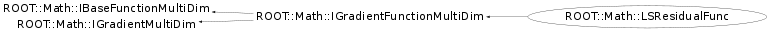

class ROOT::Math::LSResidualFunc: public ROOT::Math::IGradientFunctionMultiDim
LSResidualFunc class description.
Internal class used for accessing the residuals of the Least Square function
and their derivates which are estimated numerically using GSL numerical derivation.
The class contains a pointer to the fit method function and an index specifying
the i-th residual and wraps it in a multi-dim gradient function interface
ROOT::Math::IGradientFunctionMultiDim.
The class is used by ROOT::Math::GSLNLSMinimizer (GSL non linear least square fitter)
@ingroup MultiMin
Function Members (Methods)
public:
| ~LSResidualFunc() | |
| virtual ROOT::Math::IMultiGenFunction* | Clone() const |
| double | ROOT::Math::IGradientMultiDim::Derivative(const double* x, unsigned int icoord = 0) const |
| virtual void | FdF(const double* x, double& f, double* g) const |
| virtual void | Gradient(const double* x, double* g) const |
| ROOT::Math::LSResidualFunc | LSResidualFunc() |
| ROOT::Math::LSResidualFunc | LSResidualFunc(const ROOT::Math::LSResidualFunc& rhs) |
| ROOT::Math::LSResidualFunc | LSResidualFunc(const ROOT::Math::FitMethodFunction& func, unsigned int i) |
| virtual unsigned int | NDim() const |
| double | ROOT::Math::IBaseFunctionMultiDim::operator()(const double* x) const |
| ROOT::Math::LSResidualFunc& | operator=(const ROOT::Math::LSResidualFunc& rhs) |
private:
| virtual double | DoDerivative(const double* x, unsigned int icoord) const |
| virtual double | DoEval(const double* x) const |
Data Members
private:
| const ROOT::Math::FitMethodFunction* | fChi2 | |
| unsigned int | fIndex | |
| vector<double> | fX2 | cached vector |
Class Charts
{kind=link}
{kind=link}
{kind=link}
{kind=link}

Function documentation
operator=(const ROOT::Math::LSResidualFunc& rhs)
IMultiGenFunction * Clone() const
void Gradient(const double* x, double* g) const
FdF(x,f0,g)
double DoEval(const double* x) const
double DoDerivative(const double* x, unsigned int icoord) const